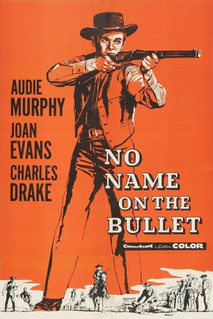

IMDB-Wertung: 7.3 / 10
IMDB-Wertung: 7.3 / 10  Metascore:
Metascore: 
Ein skrupelloser Auftragskiller hält in "Auf der Kugel stand kein Name" das Grenzstädtchen Lordsburg in Atem - jeder könnte das nächste Opfer zu sein.
Alternativ: No Name on the Bullet
 IMDB-Wertung: 7.3 / 10 Metascore:
Ein skrupelloser Auftragskiller hält in "Auf der Kugel stand kein Name" das Grenzstädtchen Lordsburg in Atem - jeder könnte das nächste Opfer zu sein.
Jahr: 1959
Dauer: 77 Minuten
FSK: 12
Land: USA Studio: Universal PicturesTonspuren:
Untertitel:
Auflösung: 1080p (1920x872) Größe: 6707 MB
Genre: Western
Regisseur: Jack Arnold
Drehbuch: Ceskoslovenská Televízia Bratislava
Soundtrack:
Darsteller:
 Charles Drake als Luke Canfield
Charles Drake als Luke Canfield Warren Stevens als Lou Fraden
Warren Stevens als Lou Fraden R.G. Armstrong als Asa Canfield
R.G. Armstrong als Asa Canfield Willis Bouchey als Buck Hastings
Willis Bouchey als Buck Hastings Karl Swenson als Stricker
Karl Swenson als Stricker Whit Bissell als Pierce
Whit Bissell als Pierce Marjorie Bennett als Store Customer , uncredited
Marjorie Bennett als Store Customer , uncredited James Dime als Townsman , uncredited
James Dime als Townsman , uncredited Harold Goodwin als Wilson - Bank Clerk , uncredited
Harold Goodwin als Wilson - Bank Clerk , uncredited Herman Hack als Townsman , uncredited
Herman Hack als Townsman , uncredited Jack Perrin als Townsman , uncredited
Jack Perrin als Townsman , uncredited Bob Steele als Poker Player , uncredited
Bob Steele als Poker Player , uncredited Edgar Dearing als Charlie - Chess Player , uncredited
Edgar Dearing als Charlie - Chess Player , uncreditedDatei: X:\HD-Western-1900-1959\Auf der Kugel stand kein Name (1959, FSK12, 1920x872).mkv seit 18.01.2017
Festplatte: HD Eastern+Western
 Es gibt insgesamt 98 Filme in der Gruppe 'HD-Western-1900-1959'
Es gibt insgesamt 98 Filme in der Gruppe 'HD-Western-1900-1959'